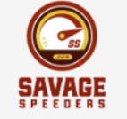
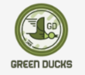
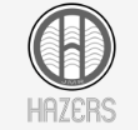
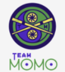
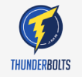
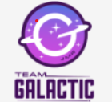
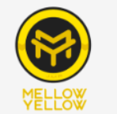
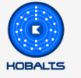

ESCUDERIAS
Marbula One Season 4 Teams
| Escudería | Logo | País de Origen | Campeonatos Ganados | Color Principal |
|---|---|---|---|---|
| Savage Speeders |  | Estados Unidos | 2 | Amarillo |
| Green Ducks |  | Canadá | 1 | Verde |
| Hazers |  | Reino Unido | 0 | Morado |
| Team Momo |  | Japón | 1 | Rosa |
| ThunderBolts |  | Alemania | 2 | Azul |
| Team Galactic |  | Francia | 0 | Negro y Azul |
| Mellow Yellow |  | Brasil | 0 | Amarillo |
| Hobalts |  | España | 1 | Rojo |
Detalles de las Escuderías:
1. Savage Speeders
Savage Speeders, originarios de Estados Unidos, son uno de los equipos más populares y exitosos de la Marbula One. Con 2 campeonatos ganados, se caracterizan por su velocidad feroz y su capacidad para liderar desde el principio. Su piloto principal, Speedy, es conocido por sus rápidos reflejos y movimientos calculados. El color amarillo que representa a los Speeders simboliza su agilidad y su deseo constante de superarse. Son un equipo muy respetado y siempre están en la pelea por el título.
2. Green Ducks
Los Green Ducks, originarios de Canadá, son conocidos por su trabajo en equipo y estrategia. Con 1 campeonato ganado, se han destacado por su consistencia y enfoque táctico. A pesar de no ser los más rápidos en todas las pistas, siempre logran mantenerse en la lucha gracias a su capacidad para adaptarse a las circunstancias. Su color verde refleja su crecimiento constante y su fortaleza en la pista, y su piloto principal, Quack, ha demostrado ser un competidor muy sólido en cada carrera.
3. Hazers
Hazers, un equipo del Reino Unido, son conocidos por su estilo único y su habilidad para sorprender. Aunque aún no han ganado ningún campeonato, los Hazers son reconocidos por su creatividad y su capacidad para mantener la calma en momentos de presión. Su color morado es un símbolo de su ambición, y su canica estrella, Hazey, ha sido elogiada por sus maniobras inteligentes. A pesar de no tener títulos, siguen siendo un equipo intrigante que siempre tiene algo preparado en cada temporada.
4. Team Momo
Team Momo es una escudería japonesa que ha logrado un campeonato gracias a su capacidad de adaptación y su habilidad para entender las condiciones de cada carrera. Su piloto principal, Momo, es conocido por su increíble control en la pista y su capacidad para mantenerse calmado bajo presión. El color rosa de la escudería representa su energía positiva y su deseo de superar a sus competidores de una manera elegante y efectiva. Team Momo sigue siendo un equipo muy querido por los fans por su estilo único y sus logros sobresalientes.
5. ThunderBolts
Los ThunderBolts son una escudería alemana famosa por su velocidad y su agresividad en la pista. Con 2 campeonatos ganados, siempre están entre los favoritos para ganar, gracias a su imponente presencia y la increíble velocidad de su piloto, Bolt. El color azul que representa a los ThunderBolts simboliza la fuerza y la fiabilidad. A menudo, su estrategia es muy directa y buscan liderar desde el primer momento, aunque su estilo rápido los pone en situaciones muy emocionantes para sus fans.
6. Team Galactic
Team Galactic es una escudería francesa que ha atraído la atención por su enfoque futurista y su estética galáctica. Aunque aún no han ganado ningún campeonato, su estilo y sus innovadoras estrategias los han convertido en un equipo que siempre genera expectativa. Su canica, Galaxy, tiene una habilidad única para tomar las curvas con precisión y velocidad. El color negro y azul de su escudería refleja su conexión con el espacio y su búsqueda constante de explorar los límites del rendimiento en la pista.
7. Mellow Yellow
Mellow Yellow es un equipo de Brasil que es conocido por su enfoque relajado pero competitivo en la pista. Aunque no han ganado ningún campeonato, han demostrado ser una escudería muy consistente y una de las más queridas por los fans. Su piloto principal, Sunny, tiene un estilo tranquilo y controlado, pero puede ser increíblemente rápido cuando es necesario. El color amarillo de Mellow Yellow refleja su naturaleza optimista y positiva, y se esfuerzan por representar a Brasil con orgullo en cada carrera.
8. Hobalts
Hobalts es un equipo español que ha ganado 1 campeonato en la Marbula One, y se ha establecido como un competidor fuerte y versátil. Su canica estrella, Hobie, es conocida por su capacidad para adaptarse rápidamente a cualquier condición de la pista, y su estilo ágil y preciso lo convierte en un contendiente formidable. El color rojo de la escudería representa su pasión y determinación. A pesar de estar rodeados de competidores más rápidos, los Hobalts siempre dan lo mejor de sí mismos y luchan hasta el final por cada victoria.